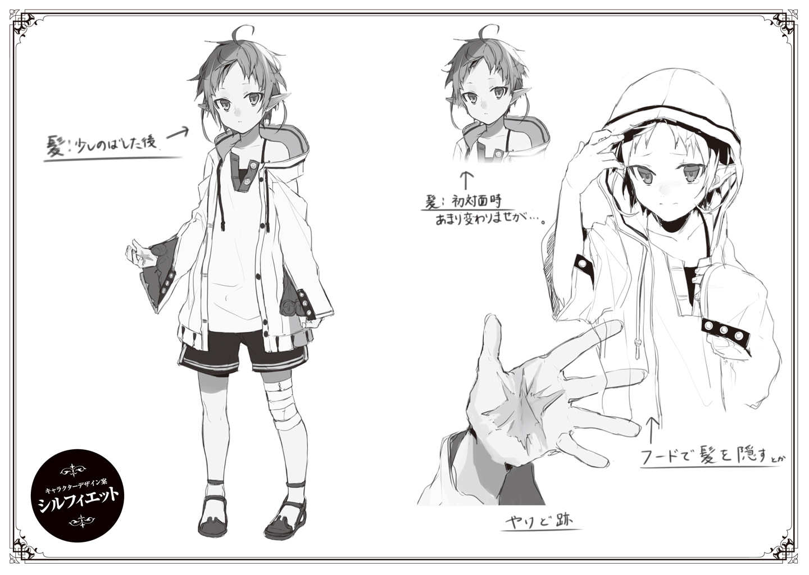
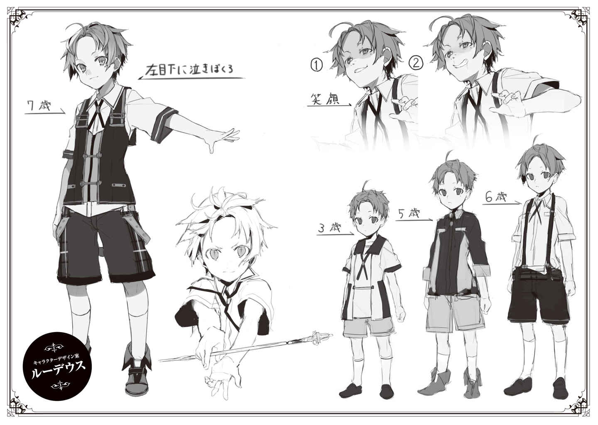
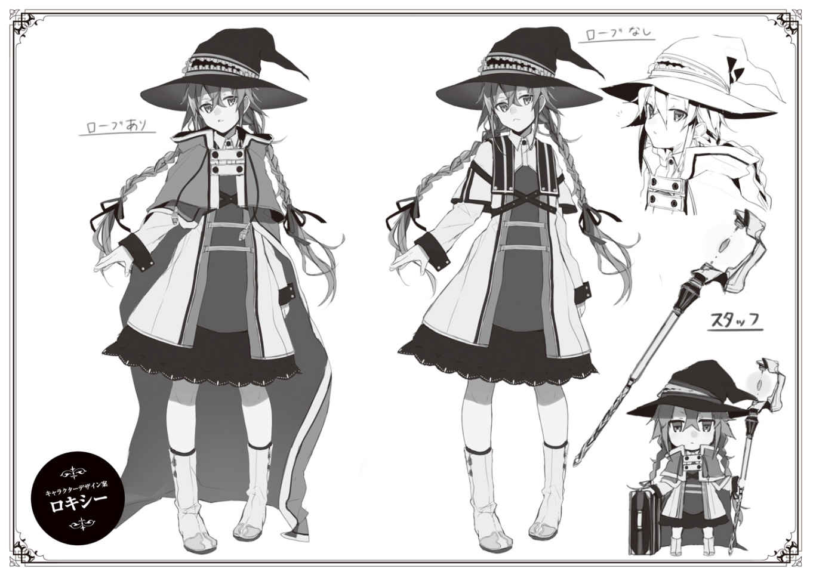
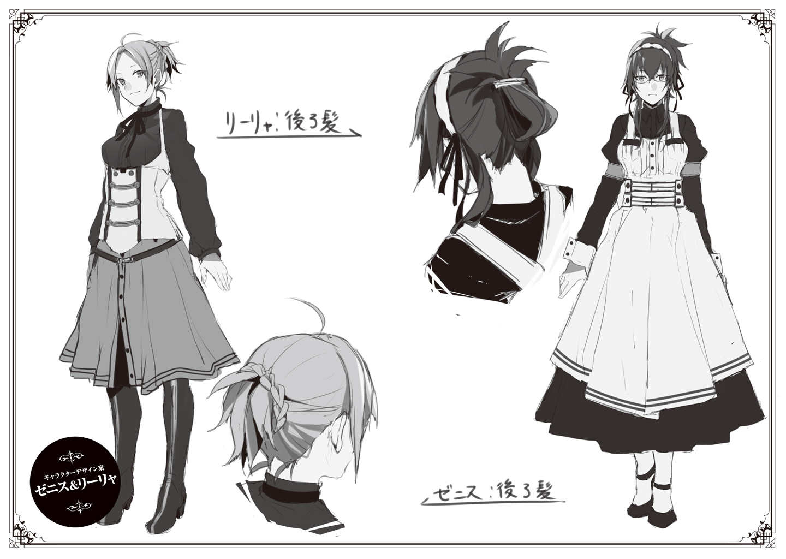
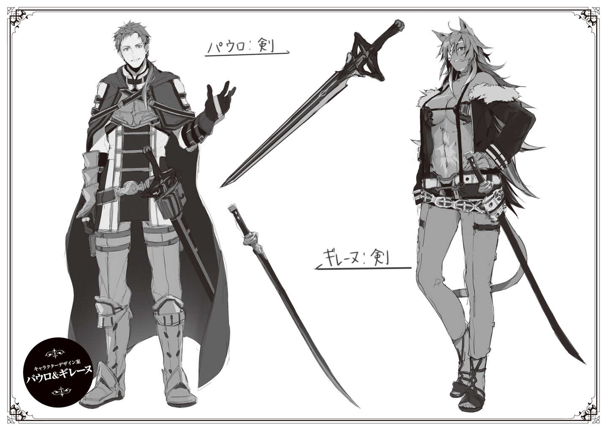

Volume 1 · Unofficial AI-assisted fan translation
Extra: The Mother of the Greyrat House
My name is Zenith Greyrat.
I come from the Holy Country of Millis. A country with a long history, the kind the word 'incorruptible' suits: beautiful, yet stuffy.
In that country, I came into the world as the second daughter of a count's family.
What they call a young lady of good family.
Back then, I was a sheltered girl. I knew nothing of the world, the kind of girl who believes that whatever she can see is all there is.
Still, if I do say so myself, I think I was a good girl.
I never went against what my parents told me, and my grades at school were good.
I followed the teachings of the Millis faith to the letter, too, and I was well thought of in society.
In some quarters, people went so far as to call me 'the very model of a Millis young lady.'
My parents, too, must have thought of me as a daughter to be proud of.
Had I gone on growing up that way, sooner or later, at some party or other, I would have been introduced to a partner my parents had chosen.
Surely the eldest son of some marquis or other. Upright in his conduct but proud, holding the teachings of the Millis faith as absolute: a man who was a textbook example of the Millis nobility. I would have married such a man, borne his children, and been entered in the register of nobles of the Holy Country of Millis as a marchioness fit to be presented anywhere—
That was my life: my 'Path' as a young lady of the Millis nobility.
But I never walked that 'Path.'
The day I came of age, my fifteenth birthday.
I had a fight with my parents. For the first time in my life I defied them, and I ran away from home.
Part of it was that I had grown sick of forever doing as my parents told me.
Part of it was that my younger sister, Therese, was far more free-spirited than I was, and I envied her for it.
All sorts of things led me off the 'Path.'
For a noble, living off the 'Path' is hard.
But, fortunately, I had studied healing magic at the nobles' school. Up to Intermediate, no less.
The Holy Country of Millis is a country where healing magic and barrier magic flourish, but even so, most people only learn healing magic up to Beginner. Anyone who has mastered Intermediate healing magic can even get a position at a clinic run by the Millis Church, so at school such students were held in special regard.
And so I was full of myself, sure that I was gifted, that I could make it anywhere.
How shallow I was.
I didn't even know how to get a room at an inn, and some bad guys soon had their eye on me.
They said, "We're looking for a healer," and pulled me, clueless about going rates and everything else, into their party. The pay they offered was far lower than what a Beginner healer is paid, but they insisted it was above the going rate.
They meant to use me as a cut-rate healer and never pay me what I was due.
Fool that I was, I looked at how kind they seemed on the surface and thought, so there really are good people in this world.
If I had gone on following them, they would probably have done far worse things to me. Used me as a shield against monsters, made me cast magic until I passed out, maybe even demanded my body.
The one who put a stop to it before it could happen was a young swordsman by the name of Paulo Greyrat.
Paulo beat the bad guys to a pulp, then dragged me, whether I liked it or not, into his own traveling party.
If a person named Elinalise, who was in the same party as him, had not explained it all to me in detail, I would have thought Paulo was the real villain.
In any case, that is how I met Paulo.
At first, I couldn't stand Paulo.
For a former Asuran noble, his language was foul, he broke his promises, he was hotheaded, he was grubby about money, he made fun of people, he was forever touching my bottom, and worse, there were times he came on to me with his dirty intentions on full display.
But I could tell he wasn't a bad person.
He always helped me.
Even as he made fun of me for knowing nothing of the world, he'd lend me a hand, saying jeez, fine, can't be helped.
Paulo was my exact opposite, but he was dependable, free-spirited, and dashing.
That I was drawn to him is not so very strange, I think.
Then again, there were plenty of attractive women around him, and I was a Millis believer.
Among the teachings of the Millis faith is one that says, 'Let man and woman each love only one.'
I had run away from home, yes, but the Millis teachings I had heard over and over since I was little, the ones everyone at school took as common sense, had put down firm roots deep inside me.
So, the next day, I said to him,
"If you keep your hands off other women, you may have me."
He laughed, and agreed.
I knew full well he was lying to me.
But part of me also thought, that's fine.
If I was going to be deceived, then I could always wash my hands of him. So I thought.
Here, too, I was just as shallow, careless, and foolish.
After all, that one time was all it took to leave me with child.
What do I do, I kept thinking. I was sick with worry.
I had never dreamed that Paulo would take responsibility and marry me.
And the child born of all that was Rudeus Greyrat.
—That is to say, Rudy.
At the moment, Rudy was sitting beside the cradle where his little sisters slept.
His expression was seriousness itself.
His handsome face, with something of Paulo in it, was drawn tight and resolute as he looked from one of his two little sisters to the other.
"Aah, aah!"
The moment Norn fussed, Rudy's expression tightened even further.
But, the very next moment.
"Bleh-bleh-boo."
Rudy stuck out his tongue and made a funny face.
"Eee, ee, bah, bah!"
Seeing that, Norn laughed happily.
Seeing Norn's smile, Rudy gave a satisfied nod, then went back to his serious expression.
"Uuh, aah!"
This time it was Aisha who fussed.
At once Rudy turned her way, and,
"Acchonburike."
he went, pressing his hands to his cheeks and making a funny face.
"Ookyaaa, achoaaa."
And Aisha, too, laughed happily.
Just as he had with Norn, Rudy nodded with a grin of deep satisfaction.
He had been doing this over and over for a while now.
"Hee hee..."
At the sight of Rudy's smile, a small laugh slipped out of me too.
After all, Rudy hardly ever smiles.
Nothing ever seems to satisfy him; whether he's learning swordsmanship or learning magic, he always goes about it with a serious face.
He never shows a smiling face, not even to his parents.
And when he does show one, it's just an odd, put-on smile he turns our way.
And that same boy, pulling faces like that at his sisters and watching them laugh, was smiling a satisfied smile himself.
Just watching him somehow put me in a cheerful mood.
What a difference from the old days.
"Hoo..."
Remembering Rudy when he was little, I let out a sigh.
Back when we found out Rudy had a talent for magic, I danced around in wild delight, but after a while I came to harbor a suspicion: that deep down, Rudy actually looked down on his parents, and maybe felt no love for his family at all.
After all, Rudy never warmed up to me.
"...But that wasn't it at all, was it."
What changed my mind was that pregnancy uproar.
Lilya got pregnant, and Paulo confessed.
In that moment, I thought I had been betrayed.
By Paulo, and by Lilya too.
With Paulo in particular, since he had broken his promise, anger welled up in me until I was ready to explode. Had I let my guard down even a little, I might well have ended up screaming at Lilya to get out, or screaming that I was leaving, one or the other.
Part of it was that, before we married, I had decided that if he lied to me, I would be done with him.
It was a thought I had half forgotten until all that happened, but it seems it had stayed with me, down at the root.
I had already been driven to the point of thinking about breaking up the family.
But Rudy scattered those feelings like mist.
He acted the little child and tried to cleverly smooth things over.
The way he did it wasn't very nice.
Even by Rudy's account, I could not forgive Paulo.
But from Rudy's words and his face, I sensed the true feeling underneath.
'Fear that the family would fall apart.'
The moment I noticed it, the thought came to me.
Ah, so this child cares about his family too, in his own way.
The moment I felt that, my suspicion that he had no love for his family cleared away.
At the same time, the thought welled up that I mustn't make my child anxious, and my anger ebbed away, just like that.
And then, before I knew it, I had forgiven Paulo and Lilya both, without any fuss at all.
If Rudy hadn't been there, it would never have turned out this way.
"Mmm, Norn-chan's a widdle cutie-wootie, yes she is. When she's all gwowed up, she'll be a pwetty lady just like Mama, yes she will. And then we can take baffs togevver and stuff, 'kay?"
That was Rudy, holding Norn's tiny hand and soothing her.
The sight of Rudy, whose face is usually so serious, going so far as to use baby talk to keep his little sister in a good mood was, how should I put it—
(So dependable...)
I had always thought Rudy was amazing, but lately I've even come to find him dependable.
When Norn and Aisha were born, things were really rough.
The two girls cried without a care for the hour, puked up their milk when I nursed them, and even pooped in the water right in the middle of their baths.
Lilya said this was to be expected, this was normal, but I couldn't sleep at night and was completely worn out.
Then Rudy came along and, as if to say leave it to me, did all sorts of things for us.
He handled it all with a veteran's skill.
Just as if he had done it before.
Surely he can't remember when it was done for him, so he must have learned by watching Lilya do it.
That's Rudy for you, I suppose.
It does give me pause that he's better at soothing babies than his own parents are, but he's truly a great help.
I know of no other child as dependable as Rudy, able to look after his newborn sisters.
Watching Rudy reminds me of my own older brother, who must still be in the Holy Country of Millis. Like Rudy, he was earnest, hardworking, and talented, and Father called him the very model of a nobleman, but he was cold to his family and treated his sisters as if they were air.
As a noble, I do think he's an admirable man, but as a brother, I don't respect him.
But with Rudy, it won't be like that.
He's sure to be a good big brother, one his sisters respect too.
In fact, he seems to intend just that himself; standing beside Paulo, looking at Norn and Aisha, he declared, "I shall aim to be a respected, cool big bro."
I can't wait to see what Rudy and Norn and Aisha will be like, years from now.
"Aah! Agyaaah!"
Just as I was thinking such things, Norn began to cry at the top of her lungs.
Rudy gave a jolt, then pulled a bleh-bleh-boo face at Norn.
"Gyaaah! Waaaah!"
But Norn didn't stop crying.
Rudy felt her diaper to check whether she had wet herself, tried picking her up, checked her back for a rash, but she showed no sign of stopping.
If it were me, I'm sure I'd have gotten flustered and shouted for Lilya. And then, remembering that Lilya was out shopping, I might have fallen into a panic.
But Rudy didn't get flustered.
He went through the possible causes one by one, and at last smacked his fist into his palm and turned to me.
"Mother, it appears to be time for her milk."
Now that he mentioned it, was it that time already?
When I watch Rudy play with his sisters, the time just flies.
"All right, all right."
"Here, please, this way."
Just as Rudy told me, I sat down in the chair.
I opened the front of my dress and lifted up the wailing Norn.
Just as Rudy had guessed, she was hungry; Norn took my nipple in her mouth at once and began drinking the milk with gusto.
At times like this, it really hits me that I've become a mother.
"...Hm?"
Then I noticed Rudy's gaze.
Whenever I go to nurse, Rudy stares at my chest, hard.
It's a very hungry, very naughty look, not one you'd expect from a child of seven.
When he's next to Paulo, he makes exactly the same eyes, and it warms my heart to see that they really are father and son, but if he's like this at his age, I worry a little about his future. Won't he turn out like Paulo, fooling around with all sorts of girls and making them cry?
"Whaaat is it, Rudy? Do you want some too?"
"Huh!"
When I asked, half teasing, Rudy looked startled and turned his eyes away.
Then, going red in the face, he said, as if making excuses,
"No, nothing in particular. I was merely watching, thinking how heartily she drinks."
"Hee hee."
He was so adorable about it that a laugh slipped out of me.
"No, no, this is Norn's. You drank lo-o-ots back when you were littler, Rudy, so you'll just have to do without."
"...Of course, Mother."
For all his "of course," Rudy looked a little disappointed.
Rudy like this is a rare find. An irresistible rush of love for him welled up in me.
Time to tease him some more.
"Hmm, if you really, really want some, then maybe when you have a bride of your own, Rudy, you could try asking her nicely, 'Please?'"
"You're right. I'll try asking her then."
Oh my. I'd been sure he would get all worked up and talk back, but he just let it pass, with a face like he had reached enlightenment.
I wonder if he'd caught on that I was teasing him.
It's a bit of a letdown, but you could also say that's so Rudy.
"...You mustn't force her, all right?"
"I understand."
When I see this grown-up side of him, it does make me feel a little lonely, after all.
"Urp."
Norn had finished her meal; I burped her and put her back in the cradle.
As I wiped my wet nipple with a cloth, Rudy went right back to staring hard at my nipple.
Hmm. Whoever ends up as this boy's bride has her work cut out for her.
The strongest candidate right now is Sylphie-chan, but that girl tends to do whatever Rudy says, so even about things she doesn't want, she probably wouldn't be able to speak up firmly...
Right.
If that day ever comes, I'll just have to give Rudy a good, hard talking-to.
As his mother.
Paulo will probably teach him nothing but how to make girls fall for him, so I'll teach him what comes after.
"Mmnyuh..."
With her tummy full, Norn looked content, but soon she began to nod off.
It seemed to be beddy-bye time.
"Drink lots, sleep lots, and grow up big and healthy, okay?"
I said it while stroking Norn's head, and that was when it happened.
"Aah! Aah!"
Aisha, if a bit more reservedly, had started to fuss.
Rudy promptly took his eyes off my chest and turned to Aisha.
"Heeey, whatsa matter, Aisha-taaan? Is your widdle back all itchy-witchy?"
Just as he had done with Norn a moment ago, Rudy held her, checked her diaper, checked for heat rash and bug bites, and...
In the end, still holding Aisha, he looked over at me with a troubled face.
That's unusual, Rudy making a face like that.
I'm glad to get to see all of Rudy's different faces, but I'd rather not see one that's clouded over.
"What's wrong?"
"Um, Mother. Today, Lilya-san. She's late getting back, isn't she."
"Now that you mention it, she is."
Usually, when she goes out shopping, she ought to be back by this time.
I wonder if something happened.
...No, I recall there was talk of a merchant caravan coming in from the fortress city of Roa today. She said she planned to buy more than usual from it, so maybe it's taking her a little longer.
"Um, it's about Aisha."
"Mm-hm."
"Her tummy, it seems to be empty."
"Oh, is she?"
Come to think of it, she had been fed at the same time as Norn, so of course Aisha would get hungry at the same time too.
Usually I nurse Norn and Lilya nurses Aisha, but...
That was when I noticed the troubled look on Rudy's face.
Still wearing that expression, Rudy spoke hesitantly.
Choosing his words.
"Um, well. Mother. We don't know when Lilya will be back, and, well, I suppose it would be all right to have Aisha wait a little, but if we leave Aisha crying like this, Norn will probably start crying too, and, um..."
I am a devout Millis believer.
And so, even now, I have my feelings about Paulo and Lilya, who broke the law of one husband, one wife. I know they aren't Millis believers, but still, having my own beliefs bent is not very pleasant.
Rudy must be keenly picking up on that.
Would a word from him put his mother in a bad mood?
Would she do something to his other little sister?
He must have worries like that.
To Rudy, Norn and Aisha, and me too: we're all family.
And... now that it's come to this, I ought to feel the same.
But can I really manage it?
If I nurse Aisha, won't I find it unpleasant?
And if Rudy sees that, won't he come to dislike me, or despise me?
"Oh, for goodness' sake, Rudy, what are you going on about? Come on, hurry up and hand Aisha over."
As if to drown out my anxiety, I called to Rudy in the gentlest voice I could manage.
"Yes."
Rudy, a little timidly, handed Aisha over to me.
I took Aisha in my arms, bared the other breast from before, and let Aisha suckle.
If Aisha had balked right then, I might have gotten a little huffy myself, but Aisha latched onto my nipple without the slightest reserve and began to drink, gulp, gulp.
"...Phew."
So that Rudy wouldn't hear, I let out a breath of relief.
What welled up in my chest was the same feeling as when I nursed Norn.
In other words, the feeling of being a mother.
How strange.
Why did I think, even a little, that I wouldn't want to nurse Aisha?
Why did I think it would feel unpleasant, having Aisha suck at my breast?
Why did I think I would have to grit my teeth through it?
Then again, the answer is simple. I know it perfectly well.
Because I am a mother.
In the end. That doesn't change. Millis believer or whatever else I am.
"She makes it look delicious, doesn't she."
"Um, it is because yours is delicious, Mother."
"I don't need that sort of flattery."
Rudy was watching Aisha drink her milk like it was delicious, and me not minding it, with a look of relief.
I wonder if he thinks protecting his little sisters is part of a big brother's job too.
A fine attitude.
His resolve to become a big brother his sisters respect must be genuine, without a word of a lie in it.
Though I do resent that he thinks I'm the one who might hurt Aisha.
"It isn't flattery. I remember the taste perfectly well."
"Really, now?"
Giggling, I stroked Aisha's head.
After a while, Aisha seemed to be full too, and let go of my nipple.
And then, just like Norn, she began to doze, so I put her back in the cradle.
Rudy was watching Aisha and me with eyes gentler than usual.
"Say, Rudy."
"Yes, what is it?"
"May I pat your head?"
"...You don't need my permission. Please pat me whenever you like."
Rudy slowly sat down beside me and offered me his head.
I stroked it lightly.
Rudy was my first child and never any trouble, so even while I was raising him I never really felt like a mother, but lately it's different.
I am this child's mother: I feel it from the bottom of my heart.
"......"
Feeling a sudden warmth, I turned toward it.
Balmy spring sunlight was streaming in through the window.
Outside the window, golden wheat fields stretched as far as the eye could see.
A calm spring afternoon.
A quiet, contented feeling.
Somehow, I'm just so happy.
"I wish times like this could go on forever."
"Yes, I agree."
Rudy nodded at my words.
Rudy, too, must be feeling at ease in this moment.
But if I can feel happy, it's surely thanks to Rudy.
If Rudy hadn't been here, then I, a devout Millis believer, once I'd become one of two wives, might have lamented my misfortune and gone off traveling with Norn, or treated Aisha and Lilya harshly.
I'm glad Rudy is here.
Because if he weren't such a clever, perceptive child, I surely could never have tasted this feeling I have now.
"Rudy."
"What is it?"
"Thank you for being born."
Rudy looked taken aback.
And then, scratching at his head, he said bashfully,
"I'm the one who should be thanking you. Thank you very much."
Seeing Rudy do something so adorable, I giggled all over again.

- Hair: after growing it out a littleupper left note, arrow to the full-body figure
- Hair: when they first meet. Not much different, though...upper right note, arrow up to the small head sketch
- Hiding her hair with the hood, maybelower right note, arrow up to the hooded sketch
- Burn scarbottom center note, under the open hand
- Character Design Conceptsbottom left round badge, small line
- Sylphiettebottom left round badge, large name

- Mole under the left eyeupper left note, arrow to the boy's face
- 1top right, beside the first face sketch
- 2top right, beside the second face sketch
- Age 7left note, arrow to the full-body figure
- Smiletop right note, arrow to the first face sketch
- Age 3lower right note, arrow to the smallest figure
- Age 5lower right note, arrow to the middle figure
- Age 6lower right note, arrow to the tallest figure
- Character Design Conceptsbottom left round badge, small line
- Rudeusbottom left round badge, large name

- Without the robetop right note, over the hat sketch
- With the robeupper left note, beside the first full-body figure
- Staffright note, beside the staff
- Character Design Conceptsbottom left round badge, small line
- Roxybottom left round badge, large name

- Lilya: hair from behindtop center note, arrow to the ponytail head sketch
- Zenith: hair from behindbottom center note, arrow to the braided head sketch
- Character Design Conceptsbottom left round badge, small line
- Zenith & Lilyabottom left round badge, large names

- Paulo: swordtop center note, beside the upper sword
- Ghislaine: swordcenter right note, beside the curved sword
- Character Design Conceptsbottom left round badge, small line
- Paulo & Ghislainebottom left round badge, large names